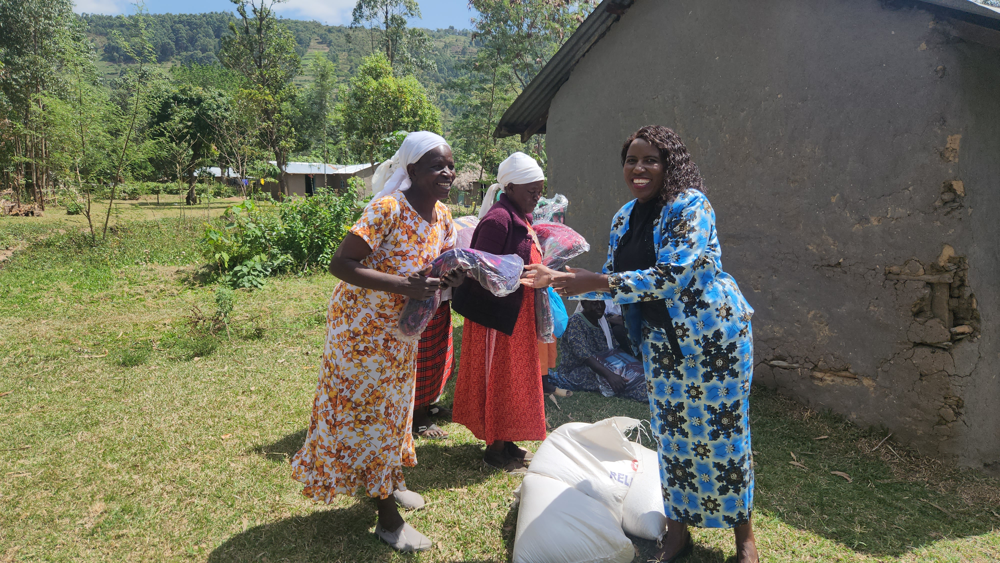
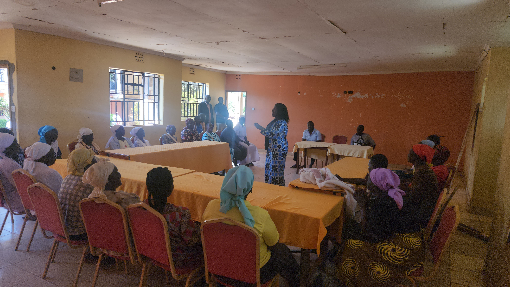

Story 02 · Women Empowerment
Knowledge, dignity and practical support.
Many village women are the breadwinners in their households. The foundation combines useful education with direct assistance that responds to everyday needs.

01
Dignity in the home
Some needs cannot wait for a long-term programme. The foundation provides practical assistance, including mattresses and other household essentials, to women and families facing immediate hardship.
This support is about more than the items themselves. It helps restore comfort, dignity and a sense that the community has not forgotten them.
02
Knowledge women can use
Community learning sessions create space for village women to discuss family planning, sanitary hygiene and practical money-making ventures.
The conversations focus on information women can apply in daily life—protecting their wellbeing, strengthening household income and supporting the families who depend on them.
